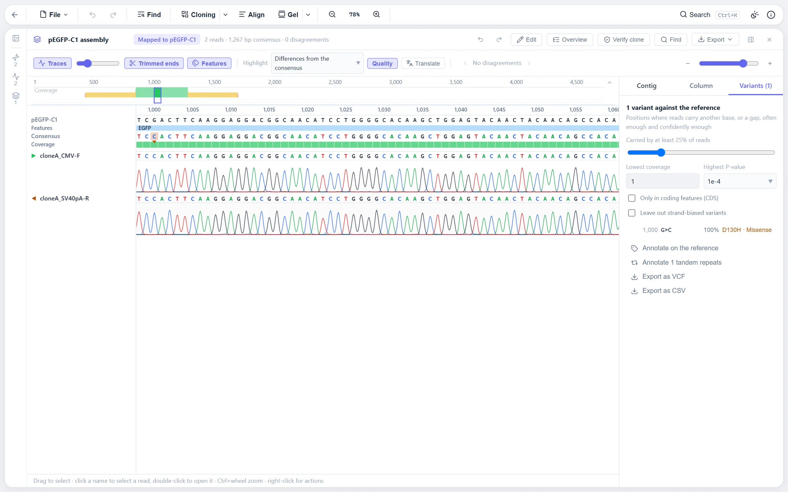

Traces in, trimmed and called
AB1 and SCF chromatograms open with their quality scores and their four traces. A freshly imported trace is trimmed at once by the Q20 cumulative score: each base scores its quality minus 20 and the stretch with the highest total is kept, which is Mott's algorithm on scores rather than error probabilities. On the real 3730 and 3130 traces in Biopython's test suite, and on synthetic ones, this gives the same stretch as the Q20 computation done independently in Python, and an exported FASTQ carries the instrument's own calls and qualities unchanged.
The read page names the rule that set the trim, "trimmed by the Q20 score", "by an error limit of 0.05", or "by hand", since the dialog's default rule keeps a few more bases than the import's and the number would otherwise change on Apply without a word. The Trim and call dialog re-trims by error probability (Mott's algorithm with a limit of 0.05, as Geneious and phred do), by a quality cut-off, or not at all, then by fixed cuts, primers and vector sequence. A read without qualities keeps its longest stretch with at most a set number of ambiguous calls, so the noisy ends where the base caller writes N go and a clean read keeps everything.
Mixed-base calling, turning strong second peaks into IUPAC codes, is on by default. With it off, a 50/50 heterozygous position that the instrument called as one base in both reads is invisible to the assembly and to the verification. The Assemble dialog shows, per read, how many mixed calls will go in, or how many strong second peaks were left uncalled.

Assemblies and contigs
One run of the assembler, whether reads are mapped to a reference or joined de novo, is kept as one assembly. It holds its contigs, one when mapping to a reference and one per group of overlapping reads de novo; the reads that went in and the reference mapped to; the settings used, meaning the lowest identity, shortest overlap and seed length; and the reads left out, each with the reason the assembler gave, such as too short after trimming, no match to the reference, below the identity threshold with the figure reached, or no overlap with any other read.
Keeping those together answers which contigs came from the same reads and why a read is missing, and makes a run repeatable. Run again starts from the same reads, reference and settings, and its result replaces the contigs with an undo step. An assembly with a single contig is shown and opened as that contig; one with several opens an overview.
A plate of clones in one run
A plate of clones, each sequenced with two or more reads, is assembled in one run: one assembly with a contig per clone, every clone verified at once.
Grouping by name
The clone is written into each read's name, with what tells its reads apart after it, as in A03.1 and A03.2, or pX12_M13F and pX12_M13R. A name is split at a separator (underscore, hyphen, full stop or space) and the clone is its first n parts, or all but its last n, the way Geneious's assemble-by-name takes a delimiter and a part. The grouping is suggested from the names: every separator and choice of up to four parts is tried, and each read in a clone of two or more counts, up to four per clone, the shape of a plate read from both ends or with a primer walk. One clone holding every read, or clones of one read each, score little. The dialog shows each read's clone as the grouping is changed, and marks clones left with a single read.
Several references
When mapping, all reads of a clone go to one reference, the one they match best: a clone is one construct, and letting each read choose would split a clone whose reads cover different parts of near-identical designs. Each read is seeded on both strands against every reference and its best diagonal's votes are summed per reference. A read across the junction of a shared vector and its insert lines up on one diagonal only in the construct it came from, so the insert decides.
When other references come within a fifth of the best one's votes, as point mutants of one design do, the clone is mapped to each of them and the one its reads agree with best is kept, a matching base counting one and a mismatch or gap costing two. Seeds cannot tell designs a base or two apart; an alignment can. A clone with no seed on any reference is listed with the reads not placed. De novo, each clone is assembled on its own, so reads of two clones are never joined however alike they are.
The verdict
The overview lists the clones with their verification verdict: verified when every feature checked is covered from end to end and the reads' consensus matches the design there, differences found, or not fully covered. Each row carries the share of the construct covered, the fewest reads over a checked feature, and the differences with their protein changes. One set of settings serves the whole plate: the reads needed over a base, whether both strands are needed, and which feature types are checked. Types rather than single features, since clones may be mapped to different constructs; primer sites and miscellaneous features are left out by default, since a primer site is where a read starts, rarely what the clone is checked for. A construct with no feature left to check is checked whole.
The table filters by verdict and exports a PDF report with counts, a row per clone and every difference; a CSV summary; and the consensus sequences of every clone, or of the verified ones, as FASTA. A row opens its contig, where the detail for that one clone shows.
Working inside a contig
A contig opens on its first read rather than on the reference's first base, since two reads of a plasmid mapped from position 255 would otherwise open on a screen of empty columns. A read goes into an assembly trimmed, and the contig keeps its own copy of the bases inside the trim; the rest is still in the trace, so each row's trimmed-off bases are drawn faded beyond its ends, as Geneious shows soft-trimmed regions, with a tick at each trim edge.
- Extend the read to here, on a faded base, places the read again with the trim moved to that base. Its row is taken out, the read with its new trim is aligned to the contig's backbone and laid out in the columns already there, and the row goes back where it was. Below the assembly's lowest identity the change is refused with the figure reached.
- Trim the read before or after this base needs no alignment: the bases past the cut are dropped and the rest keep their columns and their edits.
Each is an undo step of the contig, and every other row stays exactly as it was. Only the contig changes: the read's own trim stays as it is, so running the assembly again starts from the reads' own trims.
Variants and what they do to the protein
Sanger contigs and NGS mappings call variants with one shared core, and one function describes every variant the same way: its codon and protein change inside a coding feature, the features it falls in, Fisher's exact test for strand bias, the short tandem repeat it falls in, and the homopolymer an insertion or deletion touches. Calling and judging are separate: every candidate is kept and the thresholds are applied on top, so the table changes as you type them.
A coding feature is read as the ribosome reads it: a spliced CDS through its exons only, on its own strand, from its codon start, with its own genetic code, and on past its end into the sequence that follows. The variant is applied and both versions translated, so the effect is what actually changed between the two proteins. A frameshift is followed to the first residue that differs and on to the stop the new frame meets. Names follow the HGVS recommendations, with indels moved as far 3' as their exon allows before they are named.
Overview figures
Mean depth is the mean number of reads over the columns some read spans, counting a deletion inside a read as covered. Reference covered is the share of the reference's bases some read spans, with the circular extension folded back onto the start. The consensus length is measured with the contig's own consensus settings, gaps removed. All of it exports for the lab book.
Where to find it
Drag in AB1 or SCF files, or a folder of them, then Assemble from the explorer or the command palette. The dialog holds the grouping, the references and the settings. A finished assembly opens as its contig, or as an overview when it has several.
Limits
- Quality-based trimming needs qualities. A FASTA read or a trace saved without them is trimmed by its ambiguous calls instead.
- Placing a read again lays its bases out afresh, so its own edits in the contig are dropped. The message says so, and undo puts them back.
- Verification checks coverage and agreement against the design. It is not a replacement for reading the trace at a position that matters.
References
- Ewing B, Green P (1998) Base-calling of automated sequencer traces using phred. II. Error probabilities. Genome Res 8:186-194.
- Dear S, Staden R (1992) A standard file format for data from DNA sequencing instruments. DNA Sequence 3:107-110.
- den Dunnen JT, Dalgleish R, Maglott DR, et al. (2016) HGVS recommendations for the description of sequence variants. Human Mutation 37:564-569.